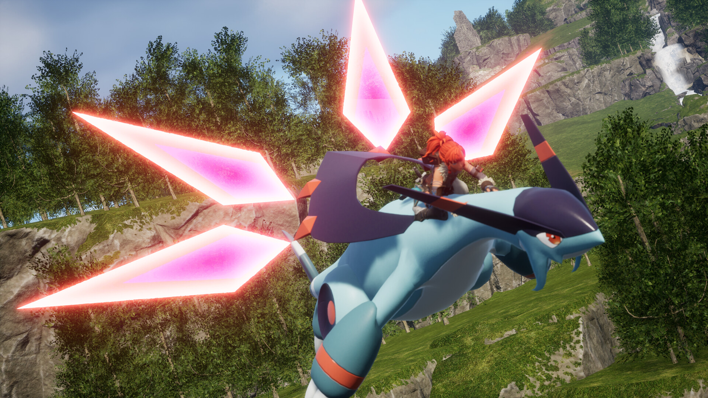

팰월드1.0 전투팰 티어표 왜 사이트마다 다를까요, 지금 보는 법 정리
팰월드1.0 나오고 나서 전투팰 관련해서 이것저것 찾아보다 보면, 사이트마다 티어표가 은근히 다르다는 걸 금방 느끼실 거예요. 저도 저번 글에서 지금 자주 언급되는 팰 몇 마리를 짚어드렸는데요, 정작 ‘근데 왜 사이트마다 순위가 이렇게 다르게 나오지?’ 하는 질문은 따로 안 다뤘거든요. 그래서 오늘은 순위 나열보다, 티어표가 사이트마다 갈리는 이유랑 지금 이 시점에 어떻게 참고하면 좋을지를 정리해볼게요. 미리 말씀드리면 이 글도 확정 순위표를 드리는 글은 아니고요, ‘왜 이렇게 다른지’랑 ‘그래서 어떻게 보면 되는지’에 집중한 글이에요.
이렇게 팰마다 맡는 역할부터가 다르니, 어떤 팰을 ‘전투용’으로 볼지 기준도 사이트마다 갈릴 수밖에 없겠네요.
팰월드 티어표, 왜 사이트마다 이렇게 다르게 나오는 걸까요?
팰월드 전투팰 티어표가 사이트마다 다른 건, 신규 팰 반영 속도랑 평가 기준이 사이트마다 다르고, 무엇보다 메타 자체가 아직 덜 굳었기 때문이에요. 저도 여러 티어표를 직접 비교해봤는데, S급으로 묶는 팰 구성부터가 완전히 똑같지가 않더라고요.
- 신규 팰 반영 속도 — 사이트마다 최신 데이터를 언제 반영했는지가 달라요.
- 평가 기준 — 전투력 수치 위주로 매기는 곳도 있고, 커뮤니티 체감 위주로 매기는 곳도 있어요.
- 메타 미성숙 — 1.0 정식 출시가 아직 열흘 남짓이라, 검증된 정답이 나오기엔 이른 시점이에요.
그러다 보니 공통으로 이름이 오르는 팰은 있어도, 나머지 순위는 사이트마다 갈리는 거고요. 저도 이번에 여러 곳을 살펴보면서 공통으로 이름이 겹치는 팰조차 ‘몇 위’인지는 사이트마다 자리가 다르다는 것까지 확인했어요. 그래서 지금 보이는 팰월드 전투팰 티어표마다 순위가 들쭉날쭉한 것도, 결국 앞서 짚은 반영 속도랑 평가 기준 차이 때문이라고 보면 되겠네요.
1.0에서 신규 팰이 유독 티어표에 많이 오르는 이유가 뭔가요?
1.0 정식 출시로 세계수·천양향(선리치) 지역에 신규 팰이 대거 추가되고, 200종 넘는 팰의 파트너 스킬이 새로 생기거나 손봐졌기 때문이에요.
- 세계수 지역 완전 개방 — 1.0에서 새로 열린 지역과 함께 신규 종이 추가됐어요.
- 천양향(선리치) 신규 지역 — 전용 타워보스랑 그 파트너 팰 계열이 여기 포함돼요.
- 플레이 가능 면적 약 2배 — 신규 팰이 자리 잡을 공간도 그만큼 넉넉해진 셈이에요.
- 200종 넘는 팰 파트너 스킬 신설·개편 — 순위가 흔들리는 진짜 구조적인 배경이에요.
새로 들어온 만큼 최신 밸런스 기준으로 짜였을 가능성이 높다 보니, 자연히 상위권 후보로도 자주 언급되는 거고요. 결국 앞서 짚은 ‘신규 팰 반영 속도 차이’도 따지고 보면 이 대규모 개편이 원인인 셈인데요.

이런 탑승형 파트너 스킬 장면, 신규 팰 얘기 나올 때마다 같이 따라붙는 것 같아요.
그럼 지금 전투팰, 뭐부터 키우는 게 좋을까요?
지금은 공통으로 자주 언급되는 팰을 후보로만 삼고, 상성이랑 파트너 스킬은 직접 확인하는 편이 안전해요.
| 팰 | 속성 | 지금 왜 언급되나요 |
|---|---|---|
| 제트래곤(Jetragon) | 용 | 1.0 이전부터 최상위권, 비행 최고속도+공중 미사일 탑승 스킬 |
| 팔라디우스(Paladius) | 무속성 | 해외 매체들이 꼽는 1.0 최상위권 레전더리 |
| 넵티오스(Neptilius) | 물 | 1.0 신규, 후속타 연계 전투에 강하고 수상 탈것으로도 겸용 |
| 샤오롱(Shaolong) | 물·용 | 1.0 신규, 천양향(선리치) 타워보스 유래 · 탑승형 Azure Sovereign(비행 탑승 + 파티에 용 속성 팰이 많을수록 자기 공격력이 오르는 스킬) |
2026년 7월 기준으로, 해외 공략 매체·커뮤니티에서 공통으로 자주 이름이 오르는 팰들이에요. 공식 티어표는 아니에요.
덧붙이면 이 네 마리 다 파트너 스킬이 탑승형이라는 공통점이 있는데, 지금 전투에서 ‘탑승 화력’이 그만큼 강하게 평가받고 있다는 뜻이기도 해요. 속성이랑 파트너 스킬 발동 방식까지 자세히 보고 싶으시면 저번에 정리해둔 「팰월드1.0 전투팰 고르는 기준, 속성 상성표부터 보고 가요」를 같이 보시면 되고요, 여기서는 ‘지금 후보로 눈여겨볼 만한 이름’ 정도로만 짚어둘게요. 다만 탑승형이라고 다 같은 성능은 아니라서, 발동 조건이나 배율까지는 팰마다 하나하나 눌러서 확인해야 하는데요.
그래서 지금은 이렇게 참고하면 돼요
티어표는 후보 리스트 정도로만 두고, 실제 판단은 내 팰 상세창에서 속성이랑 파트너 스킬을 차근차근 직접 확인하는 순서가 지금 시점엔 제일 손해가 없어요. 순위표만 외우기보다, 후보 몇 마리를 추려둔 다음 그 팰들의 속성 상성이랑 파트너 스킬 발동 방식(탑승형·상시형·거점배치형)을 하나씩 눌러보면서 내 파티 구성이랑 맞는지 보는 게 더 오래 가는 방법이더라고요.
순위 얘기보다, 결국 이 화면 한 번 눌러보는 게 제일 정확해요.
이렇게 팰을 후보로 좁혀놓은 다음엔, 저번에 정리해둔 「팰월드1.0 패시브스킬 특성 조합 추천, 교배 공식부터 달라졌어요」대로 목적에 맞는 패시브 4개까지 채워 넣으면 지금 시점에서 할 수 있는 준비는 거의 다 되는 셈이에요.
자주 묻는 질문
Q. 팰월드 티어표는 어디서 참고하는 게 제일 안전한가요?
공식 티어표가 따로 없다 보니, 저는 팰월드 위키(palworld.wiki.gg)나 팰월드 데이터베이스(paldb.cc)처럼 데이터 근거가 명확한 곳이랑 해외 공략 매체 몇 곳을 같이 비교해보는 편이에요. 한 곳만 보고 정답이라고 믿기보다, 여러 곳에서 공통으로 이름이 오르는지를 확인하는 게 더 안전하답니다.
Q. 지금 티어표, 언제쯤 자리 잡을까요?
정확한 시점까지는 알 수 없지만, 1.0 출시가 열흘 남짓 지난 지금은 아직 메타가 덜 굳은 상태라고 보시면 돼요. 200종 넘는 팰의 파트너 스킬이 새로 생기거나 개편된 만큼, 데이터가 더 쌓이고 유저들 손에 직접 검증되는 시간이 좀 더 필요할 것 같아요. 그동안은 순위보다 ‘왜 이 팰이 언급되는지’ 이유를 같이 보는 편이 덜 헷갈리더라고요.
팰월드1.0 전투팰 티어표, 오늘은 이렇게 정리해봤어요
정리하자면, 지금 어떤 팰월드 전투팰 티어표를 보시든 ‘이게 확정 순위다’라고 믿기보다는 공통으로 자주 언급되는 이름 몇 개를 후보로만 챙기고, 상성이랑 파트너 스킬은 직접 확인하시는 걸 추천드려요. 왜 이렇게 순위가 갈리는지 이유를 알고 보면 훨씬 덜 헷갈리실 거고, 후보를 추린 다음 패시브까지 채워 넣는 순서로 가면 지금 시점엔 제일 손해가 없을 거예요. 저도 메타가 좀 더 자리 잡히면 그때 다시 한번 정리해볼게요.
✔ 팰월드 같이 보기 좋은 내용
· 팰월드1.0 전투팰 고르는 기준, 속성 상성표부터 보고 가요 (발행 시 링크 연결)
· 팰월드1.0 패시브스킬 특성 조합 추천, 교배 공식부터 달라졌어요 (발행 시 링크 연결)
· 팰월드1.0 신규팰72종 서식지 정리, 선리치랑 세계수부터 가보세요 (발행 시 링크 연결)
참고한 곳 (2026.07.22 기준)
· 팰월드 위키(palworld.wiki.gg) – Elements
· 팰월드 데이터베이스(paldb.cc) – 파트너 스킬